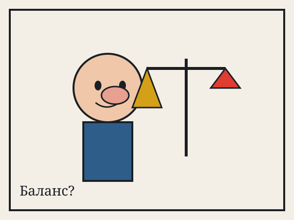
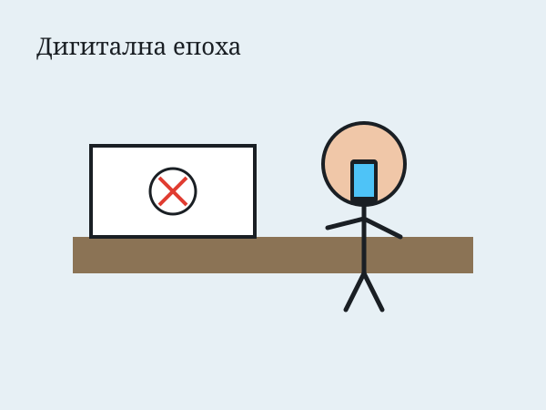
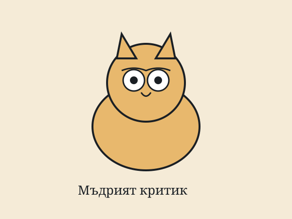
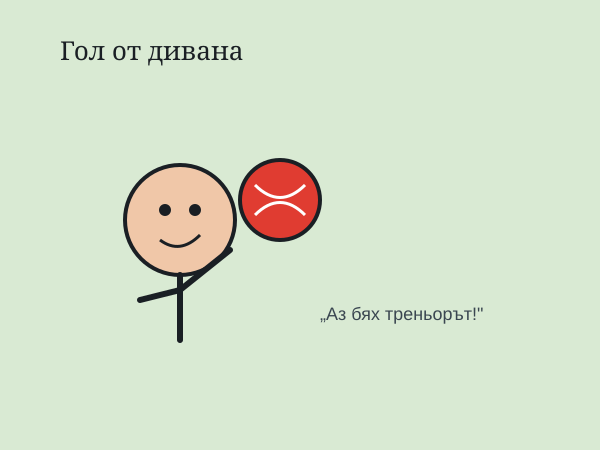
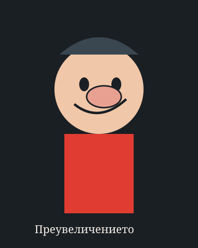
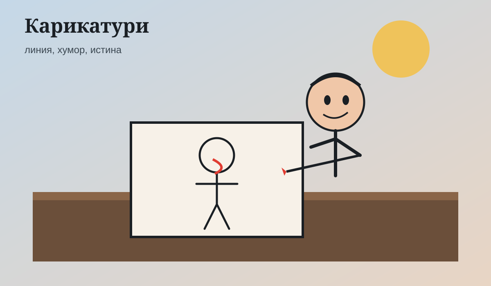

Баланс?
Политическа сатира с преувеличени пропорции и символи на справедливост.
Филтрирайте по жанр. Скритите елементи използват visibility, opacity и overflow, за да демонстрират CSS поведение при адаптивен списък.

Политическа сатира с преувеличени пропорции и символи на справедливост.

Битова сцена за вниманието, екраните и ежедневния абсурд.

Животинска карикатура — характерът говори по-силно от репликата.

Спортният хумор обича големите жестове и още по-големите мнения.

Класически похват: нос, вежди и поза като „подпис“ на личността.

Работният процес — лист, химикалка и търсене на точния жест.